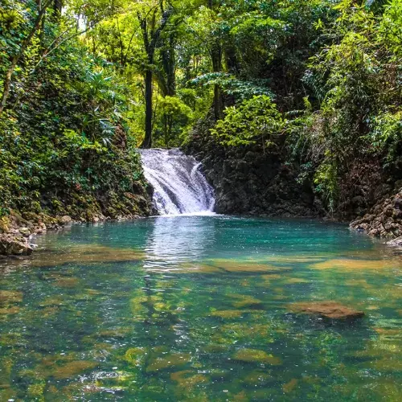
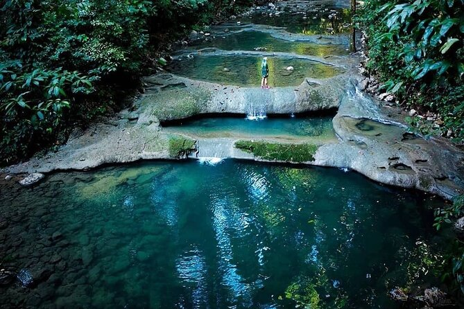
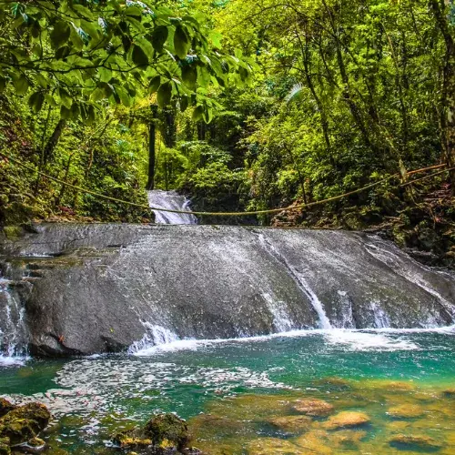

Era un centro ceremonial garífuna llamado "Los Altares". El nombre cambió cuando se popularizaron las 7 pozas principales. La gente local creía que sus aguas tenían poderes medicinales.
Los 7 Altares son una serie de cascadas y pozas naturales escondidas entre la selva, a pocos kilómetros de Livingston. El sonido del agua cayendo entre la vegetación exuberante y la frescura de sus pozas crean una experiencia casi mística. Es un lugar sagrado tanto por su belleza natural como por su valor cultural para las comunidades locales.
Senderismo, baño en pozas naturales, fotografía de naturaleza, observación de aves tropicales, picnic en el bosque.


